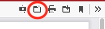

Module 6: Homework Instructions
Purpose
In this week’s homework, you will be asked to demonstrate your understanding of effect size in regression analysis.
Access the Starter Files for Module 6
Go to posit.cloud and then navigate to the course workspace via the left sidebar.
- Look for the course workspace called “Statistical Methods Spring 2025”
Open the project titled Module 6 This module contains the starter files that you will use for this lab and for your homework.
Starter Files
In the Files pane you should see these two R Notebooks:
- mod-06-lab-starter.qmd
- mod-06-hw-starter.qmd
Open up mod-06-hw-starter.qmd.
Render it!
Click the button called “Render” (circled in the image below) and then double check to see that your document rendered in the Viewer pane. It is always a good idea to occasionally check that the document still renders correctly after making changes.

Load Packages
Today, we’ll be using the following packages:
- tidyverse: a collection of packages for doing data analysis in a “tidy” way
- papaja: a package that supports the formatting of APA style documents
- emmeans: a package for conducting post-hod t-tests
- ggrain: a package for creating raincloud plots
- MOTE: a package for calculating effect size and associated CIs
- Superpower: a package for doing simulation-based power analysis
Please load these packages using the library() function. If the packages don’t load, you may need to install.packages() first.
Read in the Data
The data we are going to use this week is called salaries.csv. Read in the data using the read_csv() function. Name the data “salaries”.
The data has 3 columns:
- state: the state in which the data was collected
- region: region of the US that the state falls into
- teacher_salary: average teacher’s salary (in thousand per year)
Note
If you are having trouble reading in the data, remember that they are in the data folder!
Now, use the View() function to take a look at your data.
Research Problem:
We are interested in whether teacher’s salary differs by region in the United States. We collected data from teachers around the country and calculated each state’s average salary. States were classified into one of four regions (Northeast, Midwest, West, and South). We are interested in whether these salaries differ overall and whether each differs from each other.
Exercise 1:
Create (exactly) the following raincloud plot.
Answer the question: What does the raincloud plot tell you about how teacher salary does or does not differ by region?
Exercise 2:
Run an omnibus ANOVA test to determine whether there is a relationship between salary and region.
Answer these questions:
What does the omnibus test tell you?
What comparisons are being tested?
Interpret each of the coefficients (e.g., the intercept and each of the region contrasts). Make sure to include information about significance and the direction of the effect.
Exercise 3:
Conduct post-hoc pairwise comparisons for teacher_salary values across all levels of region. Because we preregistered our test of differences between groups (assume we did this), we do not need to correct for multiple comparisons. To remove the adjustment, make sure to include adjust = "none" in your emmeans code (if you don’t specify “none” it will apply a different adjustment).
Answer the following questions:
Which of the comparisons are significant? Which are not?
How does this differ if you include the bonferroni adjustment? Why does it differ?
Exercise 4:
Use the MOTE package to calculate the effect size and effect size confidence interval around each of the comparisons.
Answer the following questions:
What are the effect sizes for each comparison?
Is each effect small, medium, or large?
Exercise 5:
Now, write an APA style summary of your results. This should include information about your overall model (e.g., F and R2) as well as each of the pairwise comparisons and all relevant information (e.g., t, p, effect size, 95% CIs).
Exercise 7:
Now, let’s say we want to run a replication study. How many participants do we need to achieve 90% power?
First, create a power plot for sample sizes ranging from 2-50. Use this to determine what sample size you need to achieve 90% power for the omnibus test.
Now, run an analysis to determine how much power would you have, given this sample size, for each of the pairwise comparisons. You can leave all of the other design parameters as-is. Set your number of simulations at 1000 (rather than the 500 we did in class).
Answer the following questions:
From the power plot, what sample size do you need to achieve 90% power for the overall test?
What is your power estimate for each of the paired comparisons?
Are you surprised by these values? Why or why not?
In your replication study, will you recruit 12 participants or do something differently? If so, what? (No need to run any additional analysis for this question if you’re thinking of that - just tell me what you would do!)
Render and submit your document.
Make sure that you I can see all of your answers in the rendered document!
To receive credit for this homework, submit a rendered PDF version of your file to “Module 5: Homework Submission” on Canvas.
- At the top of the .qmd file, change “format: html” to “format: pdf”
- Click “Render” at the top of the document
- Your document will open in a browser tab
- If your document opens in the “Viewer” pane, click the “sidebar” button (circled in image below).
- If you get a popup warning, click “Try Again” (may be specific to Mac)

- Click the “Save” icon on the top right (circled in the image below)

- Save wherever you keep your class documents and upload your file to Canvas